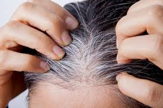

white hairs
Non-Harmfull and can be cured using home remedies
Haalthy hair is a sign of general well-being and youth. Unlike other animals, the function
of hair in human beings is being debated. Nevertheless, hair serves as a great esthetic tool and means of
nonverbal communication. Hair color and style can significantly alter the physical appearance of a person and
thus alter his/her body image. As graying of hair is perceived as a sign of old age, premature graying of hair
(PGH) can bear an adverse effect on the self-esteem of the individual.
Graying of hair also called canities or achromotrichia occurs with normal aging. However, the age at which it
occurs varies in different races. PGH is defined as graying of hair before the age of 20 years in Caucasians
and before 30 years in Blacks.Definition of PGH with respect to the Asian population is lacking. The
average age of the onset of graying in Caucasians is 34 ± 9.6 years, and in Blacks, it is 43.9 ± 10.3
years.A large population-based study reported that 6%–23% of people have 50% gray hair by 50 years of
age.
üëâpigmentation of hair
 Hair pigmentation is one of the most unique features in
humans ranging from black, brown, and blonde to red. The color of human hair is due to pigment melanin
produced by melanocytes which are neural crest derivatives. Human hair follicles contain two types of
melanin as follows: eumelanin and pheomelanin. The diversity of hair color arises mostly from the quantity
and ratio of black-brown eumelanin and reddish-brown pheomelanin. It has been hypothesized that the pH and
cysteine level of melanosomes influences the phenotype of hair. As pH reduces, there is a progressive
reduction in tyrosinase activity leading to increased pheomelanin and reddish or blonde hair.[3,4] A
mutation in melanocortin-1 receptor (MC1R) gene causes auburn or red color of hair. This mutation is seen
usually in individuals of Northern Europe with less sun exposure.A study in 2012 showed a recessive
mutation in tyrosinase-related protein 1 (TYRP1) in people with blonde hair
There are various differences between pigmentation in the skin and that of hair. Each melanocyte is
associated with five keratinocytes in the hair bulb forming a “hair follicle-melanin unit.” In contrast,
each melanocyte in the skin is associated with 36 keratinocytes constituting an “epidermal-melanin
unit.”Unlike in the skin where pigment production is continuous, melanogenesis in the hair is closely
associated with stages of the hair cycle. Hair is actively pigmented in the anagen phase and is “turned off”
during the catagen phase and absent during telogen.
The pigmentary unit is a pear-shaped black structure at the tip of dermal papilla in pigmented hair.In
gray hair, the pigmentary unit becomes fuzzy, the melanocytes become few and rounded, and lightly pigmented
oligodendritic melanocytes become visible in the proximal hair bulb. During anagen, there is a marked
reduction in the number of melanocytes in the hair follicles through autophagolysosomal degeneration leading
to pigment loss. This is thought to be central in the pathogenesis of graying.Defective melanosomal
transfer to cortical keratinocytes or melanin incontinence due to melanocyte degeneration contributes to
graying. Degenerative changes within the hair follicle are associated with an increase in dendritic cells in
the hair follicle.Eventually, there are no melanogenic melanocytes in the hair bulb.
There is earlier terminal differentiation of pigmented hair than nonpigmented hair. The growth rate,
diameter of medulla, and average diameter of nonpigmented hair are higher than its pigmented
counterpart.
Genetic and environmental elements influence the hair follicle stem cells and melanocytes. Telomere
shortening, decrease in cell numbers, and certain transcription factors have all been implicated in this
process of aging. In turn, these molecular alterations lead to structural modifications of the hair fiber,
decrease melanin production, and lengthen of the telogen phase of the hair cycle.
At the molecular level, various genes and signaling pathways that influence hair pigmentation are being
studied. Receptors for bone morphogenic protein and activins that are Bmpr2 and Acvr2a are known to
influence hair pigmentation. The reduced activity of Bmpr2 and Acvr2 can cause early graying in experimental
mice.The Notch signaling pathway influences various biological processes. Notch 1 and Notch 2 signaling
pathways were reported to have a role in maintenance of hair pigmentation.Stem cell factor (SCF) is a
cytokine involved in many physiological processes such as hematopoiesis. Recently, SCF and its receptor
(kit) are shown to have a role in melanogenesis during anagen phase.
Hair pigmentation is one of the most unique features in
humans ranging from black, brown, and blonde to red. The color of human hair is due to pigment melanin
produced by melanocytes which are neural crest derivatives. Human hair follicles contain two types of
melanin as follows: eumelanin and pheomelanin. The diversity of hair color arises mostly from the quantity
and ratio of black-brown eumelanin and reddish-brown pheomelanin. It has been hypothesized that the pH and
cysteine level of melanosomes influences the phenotype of hair. As pH reduces, there is a progressive
reduction in tyrosinase activity leading to increased pheomelanin and reddish or blonde hair.[3,4] A
mutation in melanocortin-1 receptor (MC1R) gene causes auburn or red color of hair. This mutation is seen
usually in individuals of Northern Europe with less sun exposure.A study in 2012 showed a recessive
mutation in tyrosinase-related protein 1 (TYRP1) in people with blonde hair
There are various differences between pigmentation in the skin and that of hair. Each melanocyte is
associated with five keratinocytes in the hair bulb forming a “hair follicle-melanin unit.” In contrast,
each melanocyte in the skin is associated with 36 keratinocytes constituting an “epidermal-melanin
unit.”Unlike in the skin where pigment production is continuous, melanogenesis in the hair is closely
associated with stages of the hair cycle. Hair is actively pigmented in the anagen phase and is “turned off”
during the catagen phase and absent during telogen.
The pigmentary unit is a pear-shaped black structure at the tip of dermal papilla in pigmented hair.In
gray hair, the pigmentary unit becomes fuzzy, the melanocytes become few and rounded, and lightly pigmented
oligodendritic melanocytes become visible in the proximal hair bulb. During anagen, there is a marked
reduction in the number of melanocytes in the hair follicles through autophagolysosomal degeneration leading
to pigment loss. This is thought to be central in the pathogenesis of graying.Defective melanosomal
transfer to cortical keratinocytes or melanin incontinence due to melanocyte degeneration contributes to
graying. Degenerative changes within the hair follicle are associated with an increase in dendritic cells in
the hair follicle.Eventually, there are no melanogenic melanocytes in the hair bulb.
There is earlier terminal differentiation of pigmented hair than nonpigmented hair. The growth rate,
diameter of medulla, and average diameter of nonpigmented hair are higher than its pigmented
counterpart.
Genetic and environmental elements influence the hair follicle stem cells and melanocytes. Telomere
shortening, decrease in cell numbers, and certain transcription factors have all been implicated in this
process of aging. In turn, these molecular alterations lead to structural modifications of the hair fiber,
decrease melanin production, and lengthen of the telogen phase of the hair cycle.
At the molecular level, various genes and signaling pathways that influence hair pigmentation are being
studied. Receptors for bone morphogenic protein and activins that are Bmpr2 and Acvr2a are known to
influence hair pigmentation. The reduced activity of Bmpr2 and Acvr2 can cause early graying in experimental
mice.The Notch signaling pathway influences various biological processes. Notch 1 and Notch 2 signaling
pathways were reported to have a role in maintenance of hair pigmentation.Stem cell factor (SCF) is a
cytokine involved in many physiological processes such as hematopoiesis. Recently, SCF and its receptor
(kit) are shown to have a role in melanogenesis during anagen phase.